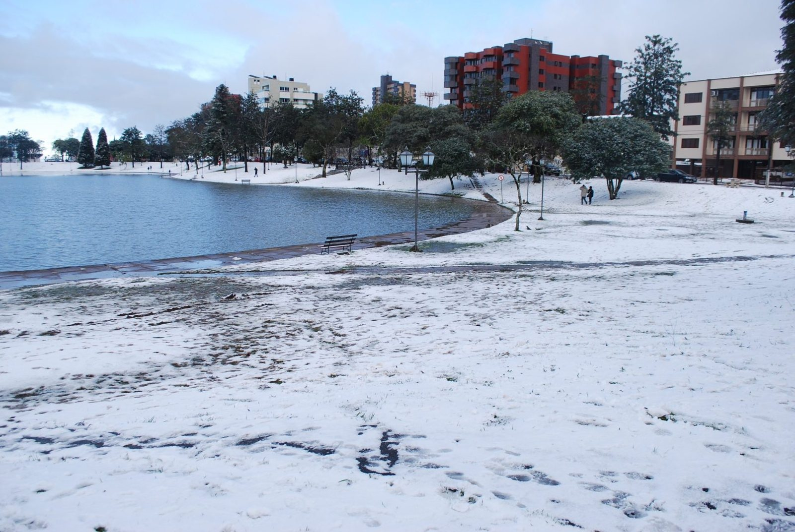
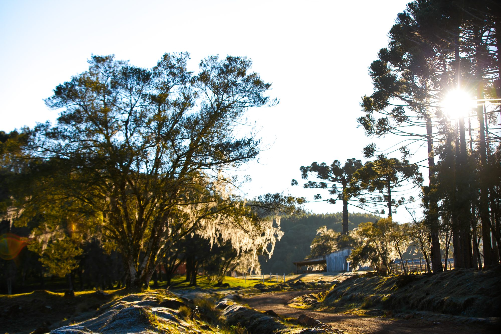

Salto São Francisco · 193 m
Uma das mais belas e imponentes quedas d'água do Sul do Brasil — natureza em estado puro.

Araucárias, cachoeiras e paisagens de geada que inspiram e reconectam. Viva o campo guarapuavano no seu tempo.
No centro do estado, Guarapuava guarda paisagens que inspiram e reconectam. Araucárias centenárias, geada ao amanhecer, cachoeiras e o silêncio bom do interior — tudo a poucos minutos da cidade.
Uma das mais belas e imponentes quedas d'água do Sul do Brasil — natureza em estado puro.
O pinheiro símbolo do Paraná desenha o horizonte e abriga o pinhão, estrela da estação.
O branco da geada cobrindo o campo ao nascer do sol é um espetáculo só do inverno.
O lobo-guará e a rica fauna do planalto fazem parte da identidade natural da região.
O aconchego do campo na mesa: produtos artesanais, queijos e muita hospitalidade.
Da neblina entre as araucárias ao reflexo dos lagos, cada parada rende uma imagem inesquecível.




Acompanhe a programação completa e as novidades pelos perfis oficiais do turismo de Guarapuava.